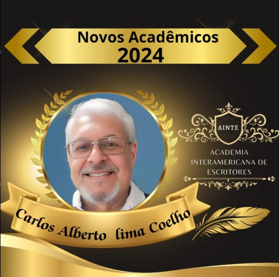

- Medalha e Diploma do Mérito Esportivo Rubem Goulart (Secretaria de Estado de Esporte e Lazer)
- Medalha e Diploma Simão Estácio da Silveira (Câmara Municipal de São Luís)
- Medalha e Diploma Amigo do Exército Brasileiro (24º Batalhão de Caçadores/São Luís/MA)
- Medalha e Diploma da Confraria dos Poetas do Rio Grande do Sul
- Diplomado como Mestre Maçon (em 13/12/76 – GOB)
